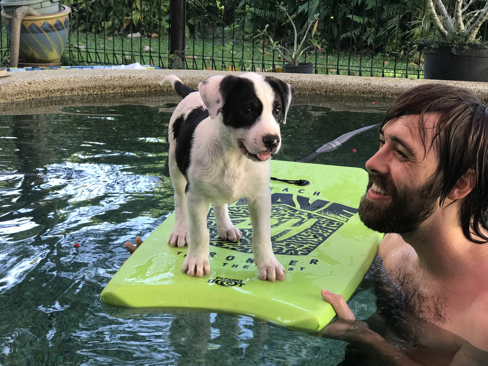
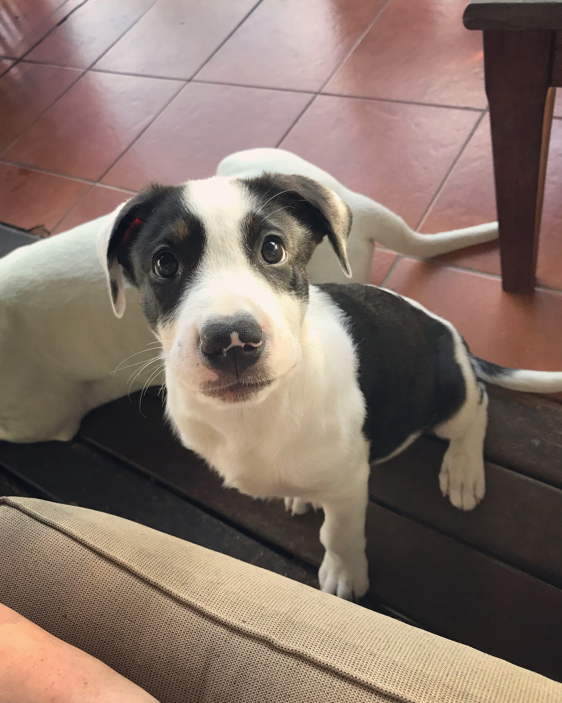
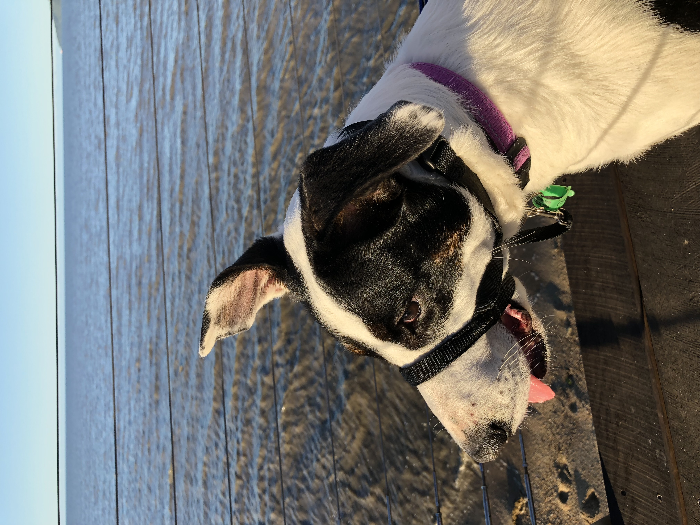
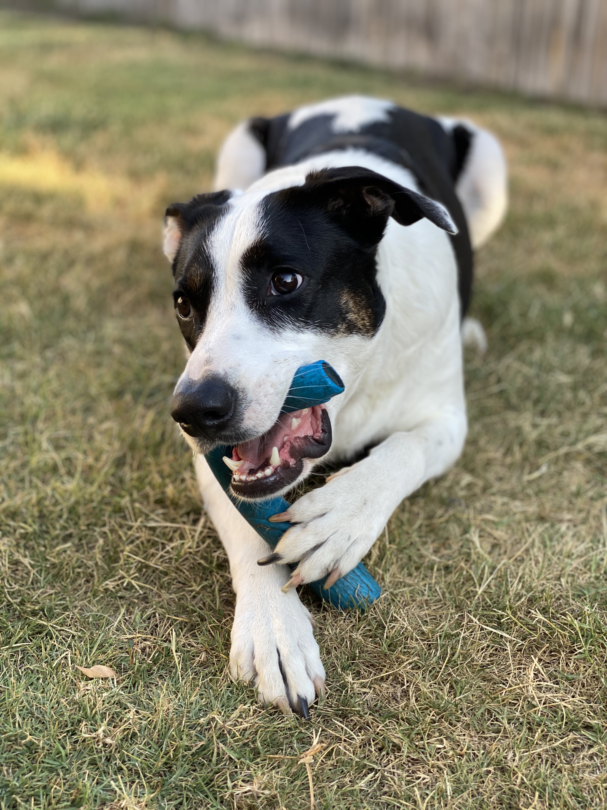
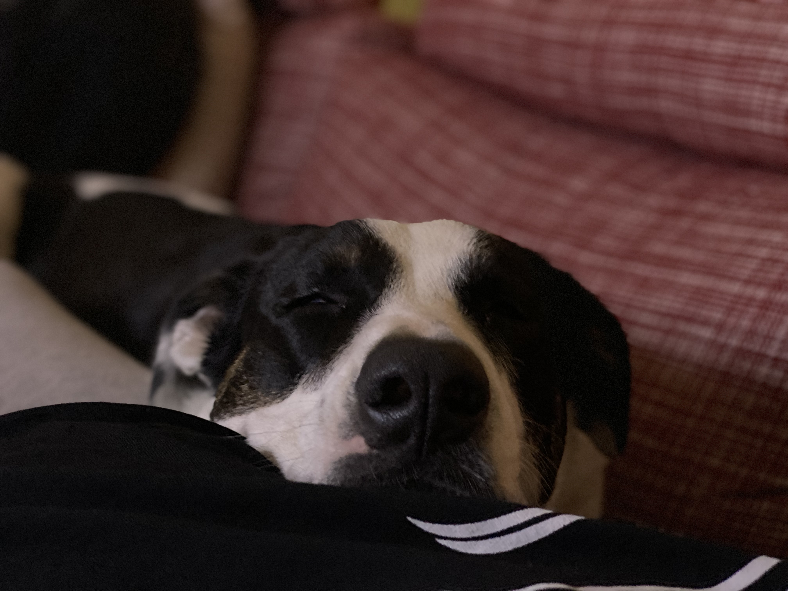

<!DOCTYPE html>

<html lang="en"></html>

<html>
  <head>
    
    <meta http-equiv="X-UA-Compatible" content="IE=edge">
    <meta charset="utf-8">
    <meta name="viewport" content="width=device-width, initial-scale=1.0">
    <link rel="stylesheet" href="styles.css">
    <link rel="stylesheet" href="fonts.css">
    <link rel="stylesheet" href="media-query.css">
    <link rel="stylesheet" href="Monoton-Regular.woff2">
    <link rel="stylesheet" href="Roboto-Regular.woff2">
    <script src="scroll.js"></script>
    <link rel="stylesheet" href="https://cdnjs.cloudflare.com/ajax/libs/font-awesome/4.7.0/css/font-awesome.min.css">
    <title>Hope Widdows Portfolio Page</title>
  </head>
  

  <body>

    <header>
      <!--Navigtion Bar-->
      <nav>
        <div class="nav_links">
          <label for="toggle">&#9776;</label>
          <input type="checkbox" id="toggle"/>

          <div class="menu">
            <a href="index.html">Home</a>
            <a href="experience.html">Experience</a>
            <a href="blog.html">Blog</a>
            <a href="contact.html">Contact</a>
          </div>
        </div>
      </nav>

      <h1>Blog</h1>
   </header>
 
   
   <section class="blog_page_container_1">
      <a href="Dusty_Surf">Dusty Likes Naps, June 1, 2021</a>
      <a href="Dusty_Puppy">Dusty Likes Naps, May 1, 2021</a>
      <a href="Dusty_Ocean">Dusty Likes Naps, April 1, 2021</a>
      <a href="Dusty_Toys">Dusty Likes Naps, March 1, 2021</a>
      <a href="Dusty_Naps">Dusty Likes Naps, February 1, 2021</a> 
   </section>
   

    <a id="Dusty_Surf">
    <section class="blog_page_container_1">
      <h2>Dusty Likes to Surf</h2>
      <h6> June 1, 2021</h6>
          
      <p>This is Dusty. She is the goodest girl. She likes to go swimming and go surfing at any given opportunity. </p>
    </section>
    </a>

    <a id="Dusty_Puppy">
    <section class="blog_page_container_1">
      <h2>Dusty was the CUTEST Puppy</h2>
      <h6> May 1, 2021</h6>
      
      <p>This is Dusty. She is the goodest girl. She was the cutest puppy that ever did puppy things. She's a bigger puppy now, but she's still the cutest one.</p>
    </section>
    </a>

    <a id="Dusty_Ocean">
      <section class="blog_page_container_1">
        <h2>Dusty Likes Long Walks on the Beach</h2>
        <h6> April 1, 2021</h6>
        
        <p>This is Dusty. She is the goodest girl. She likes to goon big walks, especially by the water. Every person she passes is her favourite.</p>
      </section>
    </a>

   <a id="Dusty_Toys">
   <section class="blog_page_container_1">
    <h2>Dusty Likes Toys</h2>
    <h6> March, 2021</h6>
    
    <p>This is Dusty. She is the goodest girl. She has a large collection of toys, all of them are her favourite.</p>
  </section>
  </a>
  
  <a id="Dusty_Naps">
    <section class="blog_page_container_1">
      <h2>Dusty Likes Naps</h2>
      <h6> February 1, 2021</h6>
      
      <p>This is Dusty. She is the goodest girl. She is excellent at naps, and enjoys a good snore.</p>
     </section>
    </a>
    </body>

    <footer class="page-footer">
      <a href="https://www.facebook.com" target="_blank" class="fa fa-facebook"></a>
      <a href="https://www.linkedin.com" target="_blank" class="fa fa-linkedin"></a>
      <a href="https://www.twitter.com" target="_blank" class="fa fa-twitter"></a>
      <a href="https://www.instagram.com" target="_blank" class="fa fa-instagram"></a>
      <a href="https://www.github.com" target="_blank" class="fa fa-github"></a>
    
    
        <button onclick="topFunction()" id="myBtn" title="Return to Top of Page">Return to Top</button>  
       </footer>
    

</html>
